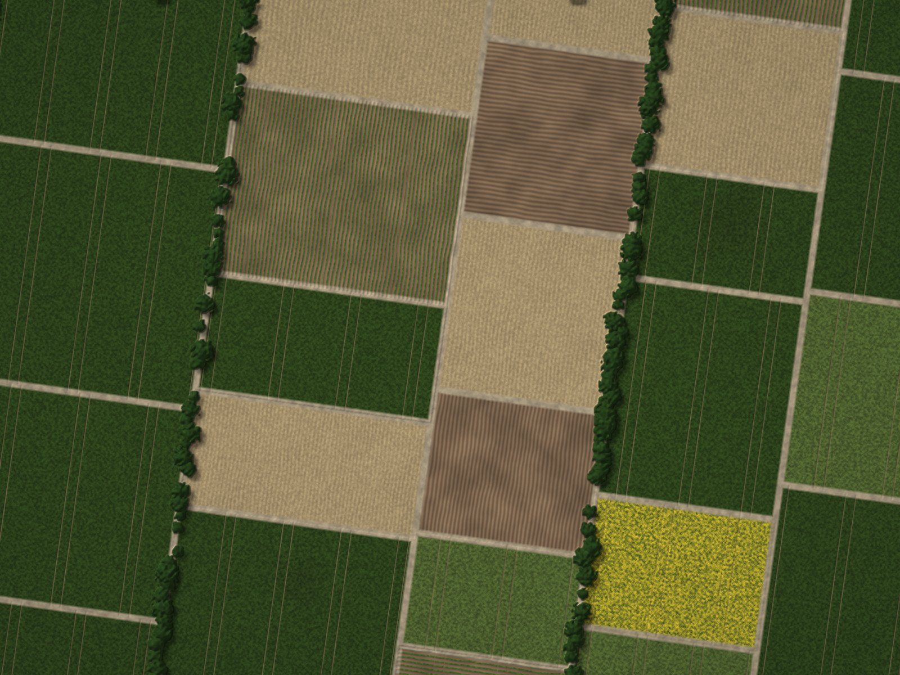

One farm, sprayed · drag to compare


RGBCOVERAGEMissed strip · one boom widthOverlap · double dose
Illustrative imagery generated for this demo, not a capture.
What the coverage map shows
Re-spray one strip, not the field.
A skipped pass and an overlap are hard to see from the ground. The coverage map shows both, with the area and the plot.
97.6 %Covered
0.4 acMissed strip
0.3 acOverlap
26 mmStereo baseline